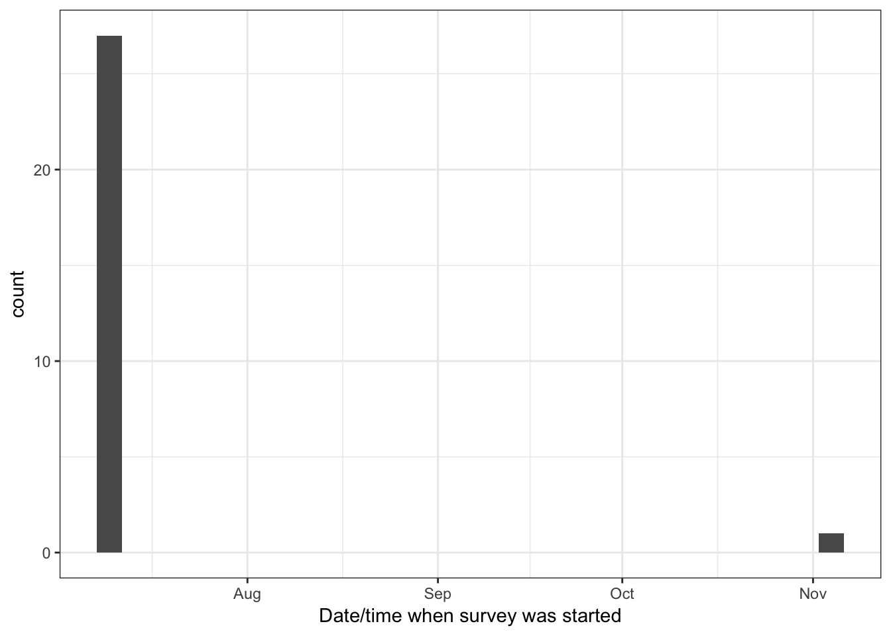
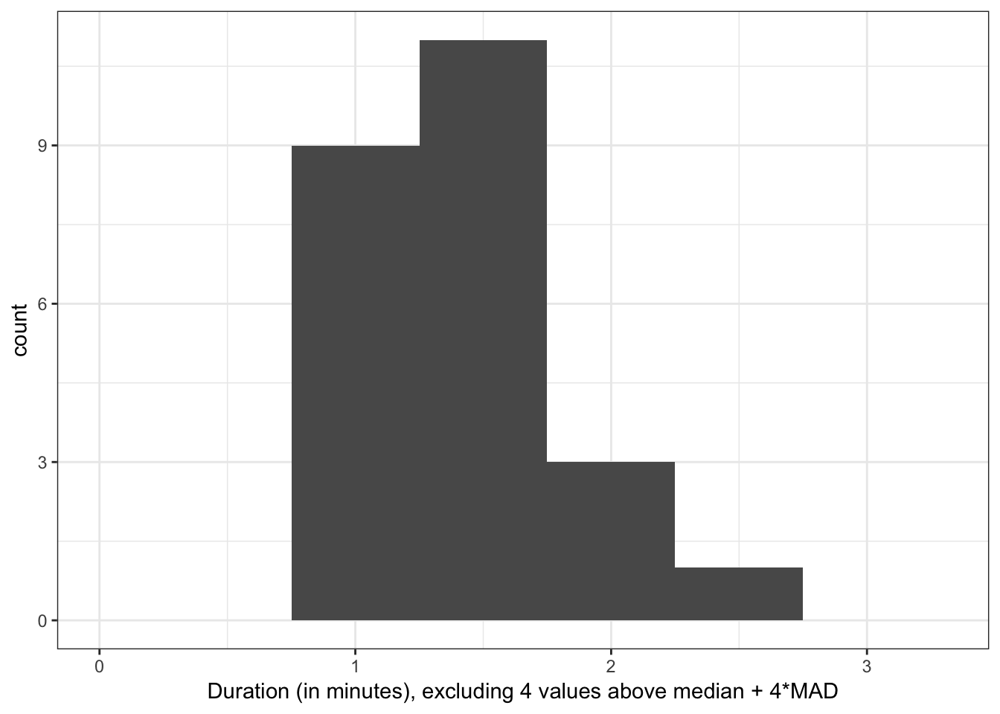

In this vignette, you can see what a codebook generated from a dataset with rich metadata looks like. This dataset includes mock data for a short German Big Five personality inventory and an age variable. The dataset follows the format created when importing data from formr.org. However, data imported using the haven package uses similar metadata. You can also add such metadata yourself, or use the codebook package for unannotated datasets.
As you can see below, the codebook package automatically computes reliabilities for multi-item inventories, generates nicely labelled plots and outputs summary statistics. The same information is also stored in a table, which you can export to various formats. Additionally, codebook can show you different kinds of (labelled) missing values, and show you common missingness patterns. As you cannot see, but search engines will, the codebook package also generates JSON-LD metadata for the dataset. If you share your codebook as an HTML file online, this metadata should make it easier for others to find your data. See what Google sees here.
knit_by_pkgdown <- !is.null(knitr::opts_chunk$get("fig.retina"))
knitr::opts_chunk$set(warning = TRUE, message = TRUE, error = FALSE)
pander::panderOptions("table.split.table", Inf)
ggplot2::theme_set(ggplot2::theme_bw())
library(codebook)
data("bfi", package = 'codebook')
bfi$age <- rpois(nrow(bfi), 30)
library(labelled)
var_label(bfi$age) <- "Alter"By default, we only set the required metadata attributes name and description to sensible values. However, there is a number of attributes you can set to describe the data better. Find out more.
metadata(bfi)$name <- "MOCK Big Five Inventory dataset (German metadata demo)"
metadata(bfi)$description <- "a small mock Big Five Inventory dataset"
metadata(bfi)$identifier <- "doi:10.5281/zenodo.1326520"
metadata(bfi)$datePublished <- "2016-06-01"
metadata(bfi)$creator <- list(
"@type" = "Person",
givenName = "Ruben", familyName = "Arslan",
email = "ruben.arslan@gmail.com",
affiliation = list("@type" = "Organization",
name = "MPI Human Development, Berlin"))
metadata(bfi)$citation <- "Arslan (2016). Mock BFI data."
metadata(bfi)$url <- "https://rubenarslan.github.io/codebook/articles/codebook.html"
metadata(bfi)$temporalCoverage <- "2016"
metadata(bfi)$spatialCoverage <- "Goettingen, Germany" # We don't want to look at the code in the codebook.
knitr::opts_chunk$set(warning = TRUE, message = TRUE, echo = FALSE)Dataset name: MOCK Big Five Inventory dataset (German metadata demo)
a small mock Big Five Inventory dataset
Date published: 2016-06-01
Creator:
affiliation:
28 completed rows, 28 who entered any information, 0 only viewed the first page. There are 0 expired rows (people who did not finish filling out in the requested time frame). In total, there are 28 rows including unfinished and expired rows.
There were 28 unique participants, of which 28 finished filling out at least one survey.
This survey was not repeated.
The first session started on 2016-07-08 09:54:16, the last session on 2016-11-02 21:19:50.
## `stat_bin()` using `bins = 30`. Pick better value with `binwidth`.
People took on average 127.36 minutes (median 1.48) to answer the survey.
## Warning: Durations below 0 detected.## Warning: Removed 4 rows containing non-finite values (stat_bin).## Warning: Removed 1 rows containing missing values (geom_bar).
| lower | estimate | upper |
|---|---|---|
| 0.6815 | 0.8006 | 0.9196 |
| raw_alpha | std.alpha | G6(smc) | average_r | S/N | ase | mean | sd | median_r |
|---|---|---|---|---|---|---|---|---|
| 0.8006 | 0.8033 | 0.8025 | 0.5051 | 4.083 | 0.06074 | 3.116 | 0.9317 | 0.4955 |
| raw_alpha | std.alpha | G6(smc) | average_r | S/N | alpha se | var.r | med.r | |
|---|---|---|---|---|---|---|---|---|
| BFIK_agree_4R | 0.7039 | 0.7059 | 0.6277 | 0.4445 | 2.4 | 0.09224 | 0.009329 | 0.4566 |
| BFIK_agree_1R | 0.7823 | 0.7822 | 0.7633 | 0.5448 | 3.591 | 0.0731 | 0.04131 | 0.5344 |
| BFIK_agree_3R | 0.6759 | 0.6926 | 0.6242 | 0.4289 | 2.253 | 0.1072 | 0.02125 | 0.347 |
| BFIK_agree_2 | 0.8181 | 0.8196 | 0.7841 | 0.6023 | 4.543 | 0.05685 | 0.022 | 0.5972 |
| name | label | type | type_options | data_type | ordered | value_labels | optional | item_order | missing | complete | n | n_unique | top_counts |
|---|---|---|---|---|---|---|---|---|---|---|---|---|---|
| BFIK_agree_4R | Ich kann mich schroff und abweisend anderen gegenüber verhalten. | rating_button | 5 | labelled | FALSE | 5. 1: Trifft überhaupt nicht zu, 4. 2, 3. 3, 2. 4, 1. 5: Trifft voll und ganz zu, NA. Item was never rendered for this user. |
0 | 5 | 0 | 28 | 28 | 5 | 2: 11, 4: 7, 3: 5, 5: 3 |
| BFIK_agree_1R | Ich neige dazu, andere zu kritisieren. | rating_button | 5 | labelled | FALSE | 5. 1: Trifft überhaupt nicht zu, 4. 2, 3. 3, 2. 4, 1. 5: Trifft voll und ganz zu, NA. Item was never rendered for this user. |
0 | 7 | 0 | 28 | 28 | 4 | 2: 11, 4: 9, 3: 7, 5: 1 |
| BFIK_agree_3R | Ich kann mich kalt und distanziert verhalten. | rating_button | 5 | labelled | FALSE | 5. 1: Trifft überhaupt nicht zu, 4. 2, 3. 3, 2. 4, 1. 5: Trifft voll und ganz zu, NA. Item was never rendered for this user. |
0 | 13 | 0 | 28 | 28 | 5 | 2: 9, 4: 8, 3: 4, 5: 4 |
| BFIK_agree_2 | Ich schenke anderen leicht Vertrauen, glaube an das Gute im Menschen. | rating_button | 5 | labelled | FALSE | 1. 1: Trifft überhaupt nicht zu, 2. 2, 3. 3, 4. 4, 5. 5: Trifft voll und ganz zu, NA. Item was never rendered for this user. |
0 | 17 | 0 | 28 | 28 | 5 | 4: 9, 5: 7, 2: 5, 3: 5 |
| lower | estimate | upper |
|---|---|---|
| 0.2473 | 0.5271 | 0.8068 |
| raw_alpha | std.alpha | G6(smc) | average_r | S/N | ase | mean | sd | median_r |
|---|---|---|---|---|---|---|---|---|
| 0.5271 | 0.513 | 0.5384 | 0.2085 | 1.054 | 0.1427 | 4.259 | 0.5631 | 0.1771 |
| raw_alpha | std.alpha | G6(smc) | average_r | S/N | alpha se | var.r | med.r | |
|---|---|---|---|---|---|---|---|---|
| BFIK_open_2 | 0.5187 | 0.5019 | 0.5306 | 0.2515 | 1.008 | 0.1551 | 0.0956 | 0.2626 |
| BFIK_open_1 | 0.5787 | 0.5594 | 0.513 | 0.2973 | 1.269 | 0.1308 | 0.05045 | 0.1948 |
| BFIK_open_4 | 0.4119 | 0.4101 | 0.3218 | 0.1881 | 0.6952 | 0.1885 | 0.004236 | 0.1594 |
| BFIK_open_3 | 0.2202 | 0.2437 | 0.2042 | 0.09701 | 0.3223 | 0.2572 | 0.01955 | 0.1594 |
| name | label | type | type_options | data_type | ordered | value_labels | optional | item_order | missing | complete | n | n_unique | top_counts |
|---|---|---|---|---|---|---|---|---|---|---|---|---|---|
| BFIK_open_2 | Ich bin tiefsinnig, denke gerne über Sachen nach. | rating_button | 5 | labelled | FALSE | 1. 1: Trifft überhaupt nicht zu, 2. 2, 3. 3, 4. 4, 5. 5: Trifft voll und ganz zu, NA. Item was never rendered for this user. |
0 | 4 | 0 | 28 | 28 | 4 | 4: 15, 5: 10, 3: 2, 2: 1 |
| BFIK_open_1 | Ich bin vielseitig interessiert. | rating_button | 5 | labelled | FALSE | 1. 1: Trifft überhaupt nicht zu, 2. 2, 3. 3, 4. 4, 5. 5: Trifft voll und ganz zu, NA. Item was never rendered for this user. |
0 | 8 | 0 | 28 | 28 | 4 | 5: 16, 4: 8, 3: 3, 2: 1 |
| BFIK_open_4 | Ich schätze künstlerische und ästhetische Eindrücke. | rating_button | 5 | labelled | FALSE | 1. 1: Trifft überhaupt nicht zu, 2. 2, 3. 3, 4. 4, 5. 5: Trifft voll und ganz zu, NA. Item was never rendered for this user. |
0 | 19 | 0 | 28 | 28 | 4 | 5: 13, 4: 10, 3: 4, 1: 1 |
| BFIK_open_3 | Ich habe eine aktive Vorstellungskraft, bin phantasievoll. | rating_button | 5 | labelled | FALSE | 1. 1: Trifft überhaupt nicht zu, 2. 2, 3. 3, 4. 4, 5. 5: Trifft voll und ganz zu, NA. Item was never rendered for this user. |
0 | 22 | 0 | 28 | 28 | 4 | 5: 14, 4: 8, 3: 4, 2: 2 |
| lower | estimate | upper |
|---|---|---|
| 0.6573 | 0.7797 | 0.9021 |
| raw_alpha | std.alpha | G6(smc) | average_r | S/N | ase | mean | sd | median_r |
|---|---|---|---|---|---|---|---|---|
| 0.7797 | 0.7871 | 0.7839 | 0.4803 | 3.696 | 0.06246 | 3.652 | 0.7916 | 0.459 |
| raw_alpha | std.alpha | G6(smc) | average_r | S/N | alpha se | var.r | med.r | |
|---|---|---|---|---|---|---|---|---|
| BFIK_consc_3 | 0.598 | 0.6118 | 0.5248 | 0.3445 | 1.576 | 0.1176 | 0.009255 | 0.3983 |
| BFIK_consc_4 | 0.7626 | 0.7706 | 0.7159 | 0.5282 | 3.359 | 0.07398 | 0.01857 | 0.5164 |
| BFIK_consc_2R | 0.7284 | 0.7272 | 0.7112 | 0.4705 | 2.666 | 0.08493 | 0.04747 | 0.5164 |
| BFIK_consc_1 | 0.7813 | 0.8042 | 0.7721 | 0.5779 | 4.107 | 0.0663 | 0.02329 | 0.6619 |
| name | label | type | type_options | data_type | ordered | value_labels | optional | item_order | missing | complete | n | n_unique | top_counts |
|---|---|---|---|---|---|---|---|---|---|---|---|---|---|
| BFIK_consc_3 | Ich bin tüchtig und arbeite flott. | rating_button | 5 | labelled | FALSE | 1. 1: Trifft überhaupt nicht zu, 2. 2, 3. 3, 4. 4, 5. 5: Trifft voll und ganz zu, NA. Item was never rendered for this user. |
0 | 10 | 0 | 28 | 28 | 5 | 4: 12, 3: 7, 2: 4, 5: 4 |
| BFIK_consc_4 | Ich mache Pläne und führe sie auch durch. | rating_button | 5 | labelled | FALSE | 1. 1: Trifft überhaupt nicht zu, 2. 2, 3. 3, 4. 4, 5. 5: Trifft voll und ganz zu, NA. Item was never rendered for this user. |
0 | 11 | 0 | 28 | 28 | 4 | 4: 15, 3: 7, 5: 5, 2: 1 |
| BFIK_consc_2R | Ich bin bequem, neige zur Faulheit. | rating_button | 5 | labelled | FALSE | 5. 1: Trifft überhaupt nicht zu, 4. 2, 3. 3, 2. 4, 1. 5: Trifft voll und ganz zu, NA. Item was never rendered for this user. |
0 | 12 | 0 | 28 | 28 | 5 | 4: 12, 1: 5, 3: 5, 2: 3 |
| BFIK_consc_1 | Ich erledige Aufgaben gründlich. | rating_button | 5 | labelled | FALSE | 1. 1: Trifft überhaupt nicht zu, 2. 2, 3. 3, 4. 4, 5. 5: Trifft voll und ganz zu, NA. Item was never rendered for this user. |
0 | 18 | 0 | 28 | 28 | 4 | 4: 12, 5: 10, 3: 4, 2: 2 |
| lower | estimate | upper |
|---|---|---|
| 0.8369 | 0.8993 | 0.9617 |
| raw_alpha | std.alpha | G6(smc) | average_r | S/N | ase | mean | sd | median_r |
|---|---|---|---|---|---|---|---|---|
| 0.8993 | 0.8991 | 0.9104 | 0.6902 | 8.914 | 0.03184 | 3.848 | 1.01 | 0.6932 |
| raw_alpha | std.alpha | G6(smc) | average_r | S/N | alpha se | var.r | med.r | |
|---|---|---|---|---|---|---|---|---|
| BFIK_extra_2 | 0.905 | 0.9049 | 0.881 | 0.7603 | 9.515 | 0.0315 | 0.007506 | 0.7906 |
| BFIK_extra_3R | 0.8657 | 0.8667 | 0.8459 | 0.6842 | 6.5 | 0.04531 | 0.01711 | 0.7239 |
| BFIK_extra_4 | 0.8526 | 0.8505 | 0.8225 | 0.6548 | 5.691 | 0.0488 | 0.02333 | 0.5986 |
| BFIK_extra_1R | 0.8524 | 0.8544 | 0.8026 | 0.6617 | 5.867 | 0.04871 | 0.003923 | 0.6626 |
| name | label | type | type_options | data_type | ordered | value_labels | optional | item_order | missing | complete | n | n_unique | top_counts |
|---|---|---|---|---|---|---|---|---|---|---|---|---|---|
| BFIK_extra_2 | Ich bin begeisterungsfähig und kann andere leicht mitreißen. | rating_button | 5 | labelled | FALSE | 1. 1: Trifft überhaupt nicht zu, 2. 2, 3. 3, 4. 4, 5. 5: Trifft voll und ganz zu, NA. Item was never rendered for this user. |
0 | 6 | 0 | 28 | 28 | 4 | 5: 13, 4: 11, 1: 2, 3: 2 |
| BFIK_extra_3R | Ich bin eher der “stille Typ”, wortkarg. | rating_button | 5 | labelled | FALSE | 5. 1: Trifft überhaupt nicht zu, 4. 2, 3. 3, 2. 4, 1. 5: Trifft voll und ganz zu, NA. Item was never rendered for this user. |
0 | 14 | 0 | 28 | 28 | 5 | 4: 9, 5: 9, 3: 6, 1: 2 |
| BFIK_extra_4 | Ich gehe aus mir heraus, bin gesellig. | rating_button | 5 | labelled | FALSE | 1. 1: Trifft überhaupt nicht zu, 2. 2, 3. 3, 4. 4, 5. 5: Trifft voll und ganz zu, NA. Item was never rendered for this user. |
0 | 20 | 0 | 28 | 28 | 5 | 4: 11, 5: 9, 3: 4, 2: 3 |
| BFIK_extra_1R | Ich bin eher zurückhaltend, reserviert. | rating_button | 5 | labelled | FALSE | 5. 1: Trifft überhaupt nicht zu, 4. 2, 3. 3, 2. 4, 1. 5: Trifft voll und ganz zu, NA. Item was never rendered for this user. |
0 | 21 | 0 | 28 | 28 | 5 | 4: 8, 5: 8, 3: 6, 2: 5 |
| lower | estimate | upper |
|---|---|---|
| 0.6081 | 0.7537 | 0.8994 |
| raw_alpha | std.alpha | G6(smc) | average_r | S/N | ase | mean | sd | median_r |
|---|---|---|---|---|---|---|---|---|
| 0.7537 | 0.7476 | 0.7146 | 0.4968 | 2.962 | 0.07432 | 2.893 | 0.9254 | 0.4402 |
| raw_alpha | std.alpha | G6(smc) | average_r | S/N | alpha se | var.r | med.r | |
|---|---|---|---|---|---|---|---|---|
| BFIK_neuro_2R | 0.84 | 0.8408 | 0.7254 | 0.7254 | 5.283 | 0.06026 | NA | 0.7254 |
| BFIK_neuro_3 | 0.5905 | 0.6113 | 0.4402 | 0.4402 | 1.572 | 0.1457 | NA | 0.4402 |
| BFIK_neuro_4 | 0.4654 | 0.4905 | 0.3249 | 0.3249 | 0.9627 | 0.1872 | NA | 0.3249 |
| name | label | type | type_options | data_type | ordered | value_labels | optional | item_order | missing | complete | n | n_unique | top_counts |
|---|---|---|---|---|---|---|---|---|---|---|---|---|---|
| BFIK_neuro_2R | Ich bin entspannt, lasse mich durch Stress nicht aus der Ruhe bringen. | rating_button | 5 | labelled | FALSE | 5. 1: Trifft überhaupt nicht zu, 4. 2, 3. 3, 2. 4, 1. 5: Trifft voll und ganz zu, NA. Item was never rendered for this user. |
0 | 9 | 0 | 28 | 28 | 4 | 3: 10, 4: 9, 2: 8, 5: 1 |
| BFIK_neuro_3 | Ich mache mir viele Sorgen. | rating_button | 5 | labelled | FALSE | 1. 1: Trifft überhaupt nicht zu, 2. 2, 3. 3, 4. 4, 5. 5: Trifft voll und ganz zu, NA. Item was never rendered for this user. |
0 | 15 | 0 | 28 | 28 | 5 | 3: 8, 2: 7, 4: 5, 5: 5 |
| BFIK_neuro_4 | Ich werde leicht nervös und unsicher. | rating_button | 5 | labelled | FALSE | 1. 1: Trifft überhaupt nicht zu, 2. 2, 3. 3, 4. 4, 5. 5: Trifft voll und ganz zu, NA. Item was never rendered for this user. |
0 | 16 | 0 | 28 | 28 | 4 | 2: 9, 4: 9, 1: 7, 3: 3 |